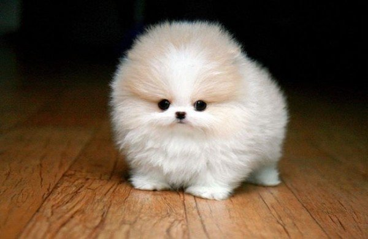
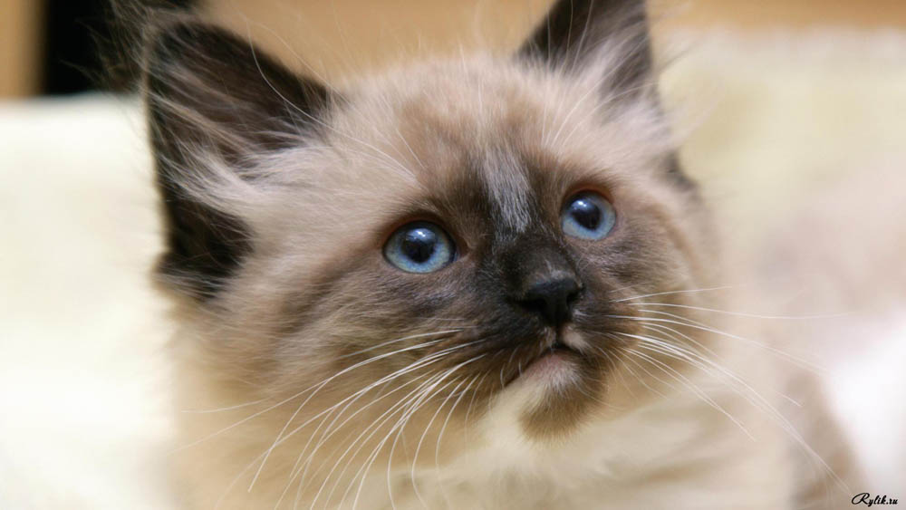
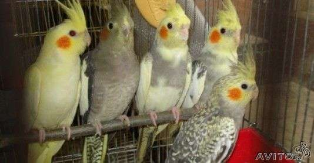

Люди утримують дома тварин вже багато тисяч років: для допомоги в певних справах, як компаньйонів, або просто, щоб ними милуватись. Собаки були вперше використані більше дванадцяти тисяч років тому для допомоги в мисливстві і з того часу багато інших тварин заводили як домашніх улюбленців, наприклад, котів, пташок, хом'яків, свиней, коней та інших.
Собака — єдина істота, яка любить вас більше, ніж ви самі.
Кішок не любить тільки той, хто ще не зустрів свою кішку
Птахи — єдині повноправні громадяни світу
